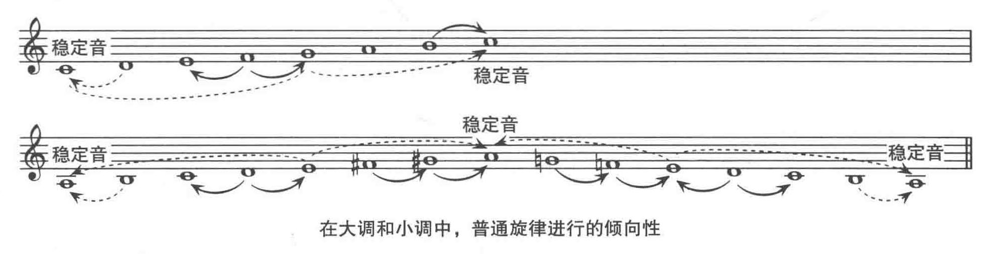

Ⅰ 记谱与节拍
1. 乐音的四要素：音高，音长，音强，音色
泛音列：第二泛音 + 第三泛音 + …
a. 基音是音高，泛音音强大小造成音色不同
b. 第二泛音是基音的两倍频率，以此类推
2. 乐器分类
a. 弦乐：拉弦，拨弦
b. 管乐：铜管，木管
c. 打击乐
d. 键盘乐器
3. 记谱符号
a. 谱号
i. 高音：G；低音：F
ii. 中音/次中音：C
b. 调号：升降号
i. 升号，降号，还原号
ii. 重升号，重降号，部分还原号
iii. 等音记法（例：C♯ = D♭）
c. 拍号
i. 例：四3拍 → 每小节有3个四分音符
ii. 四4拍，二2拍有特殊拍号
iii. 单拍子：2，3，4拍子（德国体系中，四4拍为单拍子）
1) 二拍子：强、弱
2) 三拍子：强、弱、弱
3) 四拍子：强、弱、次强、弱
iv. 复拍子：6，9，12拍子
排数除以三得到单位拍数量，例：八9拍 → 复三拍子
4. 音程：任意两个音的间距
a. 演奏方式
i. 和声音程：同时演奏
ii. 旋律音程：先后演奏
b. 音域分组命名（其中，c'为中央C）
i. 低音：大字一组C' → 大字组C → 小字组c
ii. 高音：小字一组c' → 小字二组c'' → 小字三组c'''
c. 级进：从一个音到其半音/全音
i. 小二度：半音，相邻两个键；包括E和F，B和C
ii. 大二度：全音，两个半音
5. 节奏
a. 小节：
i. 小节线
ii. 双线表示段落结束
iii. 结尾双线，后线较粗表示整曲结束
iv. 反复记号：结尾线，两点
b. 音符：符头，符干，符尾
i. 分类：二全音符，全音符，二分音符 ~ 六十四分音符
ii. 附点：增加被附音符时值一半
延音线：音符时值相加，可表出任何时值
延音记号：酌情延音，一般一倍
iii. 起拍：开头出现不全的一小节
iv. 符杠，三连音
c. 休止符
i. 分类：全休止符，二分休止符 ~ 三十二分休止符
ii. 可以用附点，不用延音线
6. 力度记号
a. ff：很强；pp：很弱
b. mf：中强；mp：中弱
c. fp：强之后马上弱
d. sf/sfz：突强
e. 重音符号：>；长<>：渐强，渐弱
7. 演奏记号
a. 连奏：长弧线
断奏：跳音
b. 装饰音：倚音，回音，颤音
8. 切分：重音的转移
a. 弱拍音延长到强拍音：长音放在短音里面
b. 休止强拍音
c. 在在弱拍音上加重音
Ⅱ 调性与音程
1. 调性：调的主音和调式类别的总称（例：C大调）
a. 调性中心：主音，如c'
b. 调式，如大调式，小调式
c. 调性由音阶组成，如C大调音阶，音级为1 ~ 7
d. 音程/和弦：调性材料的两个/两个以上同时响起
e. 无调性：不基于音阶，而是基于十二音序列
2. 调式：大调和小调：
a. 大调：3 ~ 4，7 ~ 8之间为半音，其余为全音
小调：2 ~ 3，5 ~ 6之间为半音，其余为全音
b. 和声调：在大/小调基础上，第七级音升高半音
旋律调：在大/小调基础上，第六、七级音升高半音
在音阶下行的时候，和声调和上行一样；旋律调和自然调一样
c. 大小调之间的关系：
i. 关系大小调：用相同调号的大小调，例：C大调和a小调
关系大小调之间相差一个小三度
ii. 平行大小调：有相同主音的大小调
d. 五度循环：纯五度跨越12次回到原来的音
e. 都要要按照字母顺序排列，谱号和名字的保持一致
3. 音程：性质 + 度数
a. 单音程（八度之内的音程，超过则称复音程）分类
i. 纯一度（P1）：同一个音
ii. 小二度（m2）：跨越一个半音，音阶中用
iii. 大二度（M2）：跨越两个半音，音阶中用
注意：F♯和G♯是大二度，F♯和A♭不是大二度，但都是全音
虽然两组音相同，但是大二度一定要字母也相邻
iv. 小三度（m3）：跨越三个半音，三和弦用
v. 大三度（M3）：跨越四个半音，三和弦用
vi. 纯四度（P4）：跨越五个半音
vii. 增四度（A4）/减五度（d5）：跨越六个半音，三全音
viii. 纯五度（P5）：跨越七个半音，大三和弦的根音和五音之间
ix. 小六度（m6）：跨越八个半音
x. 大六度（M6）：跨越九个半音
xi. 小七度（m6）：跨越十个半音
xii. 大七度（M6）：跨越十一个半音
xiii. 纯八度（P8）：跨越十二个半音，一个八度
b. 其他音程
i. 大小：倍减三度 → 减三度 → 小三度 → 大三度 → 增三度 → 倍增三度
ii. 纯：减五度 → 纯五度 → 增五度
c. 音程转位：一个音程中低音提高八度，或高音降低八度
i. 音程和转位和为9
ii. 大音程 ↔ 小音程；增音程 ↔ 减音程；纯音程不变
d. 协和程度
i. 不协和音程：大/小二度，大/小七度，增四度/减五度
ii. （不完全）协和音程：大/小三度，大/小六度
iii. 完全协和音程：纯一度，纯四度，纯五度，纯八度
4. 音阶
a. 教会音阶
i. 伊奥尼亚（自然大调）： 1 2 3 4 5 6 7
ii. 多利亚：2 3 4 5 6 7 1
iii. 弗利几亚：3 4 5 6 7 1 2
iv. 利底亚：4 5 6 7 1 2 3
v. 混合利底亚：5 6 7 1 2 3 4
vi. 艾奥尼亚（自然小调）：6 7 1 2 3 4 5
vii. 洛克里亚：7 1 2 3 4 5 6
注意，（和声/旋律）小调的类似变化这里称N级（和声/旋律）小调
b. 音程音阶：
i. 全音阶：彼此相隔三个半音，只包含增三和弦
ii. 半音阶：相隔一个半音
iii. 八声音阶：相隔半/全或者全/半交替出现的音阶
c. 五声音阶：去掉4，7音的音阶
i. 大调五声音阶：12356
ii. 小调五声音阶：61235
d. 派生的音阶
i. 蓝调音阶：612♭335
ii. 比波普属音阶：5671234♯45
比波普多利亚音阶：234♯456712
比波普大音阶：12345♯567
5. 和弦
a. 三和弦：彼此分开（大/小）三度，从下到上：根音，三音，五音
i. 密集排列：简单排列，按三度顺序排列
ii. 大三和弦：下两个音为大三度，上两个音为小三度，共纯五度
小三和弦：下两个音为小三度，上两个音为大三度，共纯五度
iii. 增三和弦：上下两个音都为大三度，共增五度
减三和弦：上下两个音都为小三度，共减五度
iv. 罗马数字为和弦在某一个音阶中的位置
用大/小写罗马数字表示大三和弦
用大/小写加「°」表示增/减和弦
b. 转位和弦（相对于原位和弦）
i. 第一转位：三音在最低音
ii. 第二转为：三音在最高音
Ⅲ 旋律与和弦
1. 旋律：一系列音连续发出声音
a. 乐句：2 ~ 8小节
i. 开始 → 中部 → 结尾
ii. 弱起：非完整小节，有时最后的小节会相应减少拍数
iii. 强/弱终止：结尾落在小节的强/弱拍
b. 乐段：乐句合并的更大结构
i. 上/下乐句：第一/二句
ii. 平行乐段：开头相似的乐段
c. 动机：几组短小旋律组成的乐句
i. 节奏动机：短的、有特色的节奏型，可以在不同的音高重复
ii. 旋律动机：既包含有特点的节奏型，也包含模仿的音高关系
d. 音阶中各个音符的名字：
i. 主音，上主音，中音，下属音，属音，下中音，导音
ii. 自然小调/下行旋律小调的第七级音称作下主音
iii. 最重要的：主音，属音，下属音
e. 稳定音：组成主和弦的三个音
i. 导音是典型的不稳定音，有移动到主音的倾向
ii. 旋律小调下主音升到导音，再移动到主音

2. 旋律模式
a. 中止的旋律模式
i. 从属音跳到主音结束
ii. 带装饰的中止：强拍先现
b. 弱起的旋律模式
i. 弱起从属音跳到主音
ii. 级进形成的三度音程（主音到三级音/三级音到主音）
iii. 分解三和弦
c. 级进与跳跃
i. 级进进行：旋律平滑，音程多为二度
ii. 跳进进行：常分解和弦
1) 属和弦和下属和弦的音
2) 小调中，尝试用大调的属三和弦
iii. 和弦外音：不改变旋律的前提下，掺杂的其他音，可以出现在任何位置
1) 经过音（PT）：在两个和弦音的跨度之内，级进进入和离开
2) 辅助音（NT）：在两个相同的音之间，级进进入并离开
a) 跳进辅助音（ET）：级进进入，跳进离开
b) 环绕辅助音（CT）：以多次级进方式离开和弦音，再级进到新和弦音
3) 延留音（SUS）：弦音连线/重复，再下行解决到新和弦音（变和弦了）
上行解决延留音（RT）：以上行方式解决新和弦音
4) 先现音（ANT）：早于和弦本身出现的音
5) 倚音（AP）：跳进进入，上/下行级进离开
6) 踏板音：低音声部是一个长音符
iv. 高潮：最高的一个音
位置：末尾，中间（结尾降低），开头
d. 模进：在不同的音高重复同一动机
i. 变化模进：重复时，音高变化，音程或节奏发生变化
ii. 变化重复：重复是，音高不变，音程、节奏
e. 进行：两个声部的移动方向关系
i. 同向进行，反向进行
ii. 斜向进行，平行进行
3. 和弦
a. 和弦缩谱不是作品的一部分
四声部合唱和弦时，常把其中一个音（多为根音）选两个八度
b. 七和弦：在三和弦的基 础上，加一个根音向上的七度，这个音是七音，以C为例
i. 常用：
大三和弦 + 小七度 → 属七和弦（C7, Mm7）
减三和弦 + 小七度 → 导七和弦（dm7）
大三和弦 + 大七度 → 大七和弦（Cmaj7, MM7）
小三和弦 + 小七度 → 小七和弦（Gm7, mm7）
减三和弦 + 减七度 → 减七和弦（dd7）
ii. 不常用：
增三和弦 + 增七度 → 增七和弦（AA7）
小三和弦 + 大七度 → 小大七和弦（mM7）
增三和弦 + 大七度 → 增大七和弦（AM7）
增三和弦 + 小七度 → 增小七和弦（Am7）
c. 罗马数字和和弦符号
i. 罗马数字：Cvii°7
1) 根音音阶 + 音级
2) 大/小写表示大/小三和弦
大写 + 「+」表示增和弦，小写 + 「°」表示减和弦
3) 上标数字表示增加的音符（七和弦为7）
此时，「°」表示三和弦和七度都是减的
在圈上加斜杠表示只有三和弦是减的，七度是小的
ii. 和弦符号
1) 三和弦根音（ + 增加的音符）
2) 大三和弦不写，小三和弦加m/mi
减三和弦加「°」，增三和弦加「+」
3) 数字表示三和弦扩展，并表示根音上方的音程
d. 和弦进行：将和弦排列起来
正三和弦：I、IV、V：主三和弦，下属三和弦，属和弦
正三和弦符合五度循环进行
e. 和弦中止
i. 全终止：终止在主和弦上（V到I）
ii. 半终止：中止在属和弦上（I到V或IV到V）
iii. 变格中止：IV到I的进行
4. 为旋律配和声
a. 一般规则
i. 选择的和弦要和旋律中大多数的音匹配
ii. 结尾应保证形成一个终止
iii. 和弦音应该与跳进前/后的全旋律相匹配
iv. 属前和弦（ii，IV，ii7）一般进行到V（前两个也可以到I）
主前和弦（V，V7）一般进行到I
b. 三个正三和弦(I, IV, V)可以为大部分曲子配伴奏
Ⅳ 和声基础
1. 配和弦的流程
a. 选择基础的和声根音序列（以下都是C大调，转成数字可以使用其他大小调音阶符号填充）
i. 卡农的经典降阶：CBAGFEDGC
ii. 四度圈的四度跳进：FBEADGC
iii. 其他：CFGC，CAFG，CGAF，AFGC，AFCG，AGFE，CGAA，DGCA
b. 确定好每个和弦的最低音，以卡农C大调为例
i. 第一个/最后一个为主音，所以是C
ii. 倒数第二个为主音的属音，为G，在这个和弦前可以演奏一个挂四和弦
c. 为每一个根音配C大调和弦，以CBAGFEDGC为例
i. 如果低音是和弦根音，尽量配这个音
例：第三个B配Cvi
ii. 如果没有根音，就转位，但不可以把五音转下去（除了主和弦）
例：第二个G配CV，转位一次
iii. 如果原位和弦是配V和弦，只建议配在尾部
iv. 低音下行二度的时候可以考虑原位转第一转位和弦，上行则反之
2. 其他和弦操作
a. 转调：用目标调式的V级属和弦作为过渡
i. 对于钢琴窗而言，可以通过平移来改调
ii. 转调幅度有大/小的二/三度，五度圈转调
例：大调的C大调的CGACFEDG，改为♭E大调后就是♭E♭BC♭E♭A♭EF♭B
b. 对七和弦增加和弦
i. 运用2-5-1进行，对目标和弦前面纯四度增加和弦
1) 例：对于CAFG，可以在AFG前面加和弦，变成CEACFDG
2) 属和弦可以用三全音的和弦进行替代
ii. 对于转位和弦，不建议这么增加
c. 就近原则：和弦各声部进行不少过三度，和弦弹奏后再踩踏板
3. 和弦终止乐曲法
a. 大调的大七和弦
i. 主七和弦和下属七和弦都是大七和弦，可以用于开始/结束
ii. 但不一定需要调内的两个大七和弦，可以用任意大七和弦
b. 大调的♭6♭7：在主音1结束前，加♭6♭7两个和弦
可以将这三个音平移，用下面的利底亚音阶弹奏
c. 大调的利底亚：用FGABCDE式的音阶（不是大/小调）结束曲目
4. 爵士乐理论
a. 教会音阶
i. 在大和弦上演奏伊奥尼亚/利底亚音阶
ii. 在小和弦上演奏爱奥尼亚/多利亚音阶
iii. 在属和弦上演奏混合利底亚音阶，四/七级旋律小调
iv. 在导和弦上演奏洛克里亚音阶，六级旋律小调
v. 可以在增和弦上演奏三级旋律小调
b. 五声和弦
i. 在大和弦上演奏根音，2，5音构建五声音阶
ii. 在小和弦上演奏3，4，7音构建五声音阶
iii. 属和弦的根音，以及属七变化和弦的根音与三全音的五声音阶
c. 与音程相关的音阶
i. 在属七降九和弦演奏半/全音阶：可以用任意升降3/4度的属和弦代替原来的和弦
ii. 在减七和弦演奏全/半音阶，减七和弦可以和属和弦相互替代
iii. 小大和弦起小调I级作用，可以用于替代I级的小七和弦
d. 其他音阶：
i. 可以在小调五声音阶的和弦上演奏布鲁斯音阶
ii. 比波普属音阶用于属和弦；比波普多利亚音阶用于小和弦；比波普大音阶用于大和弦